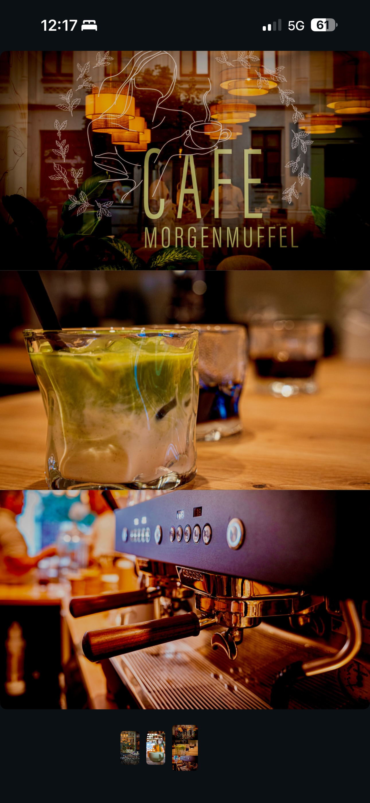
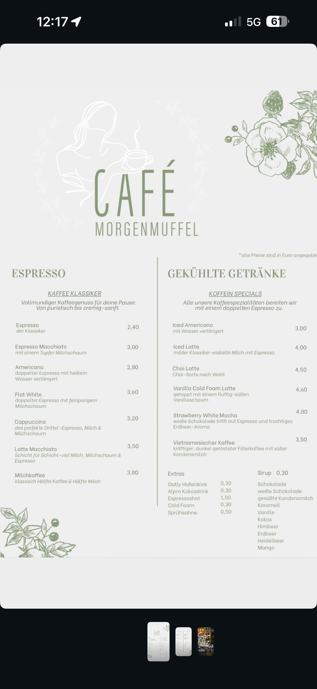

Bäckerstraße 6 · Torgau
Guter Kaffee.
Gute Zeit.
Ein kleines Café mitten in Torgau. Espresso aus dem Siebträger, täglich frisch belegte Bagels, Matcha in allen Varianten — und genug Zeit, um sitzen zu bleiben.
- Geöffnet Montag bis Sonntag, 9 – 17 Uhr
- Küche Bagels, Gebäck aus der Vitrine
- Bar Espresso, Matcha, Frappés
- Kaffee
- Bagels
- Matcha
- Kuchen
- Good Times
@cafemorgenmuffel_torgau
Über uns
Ein Ort für Morgenmuffel und alle danach.
Wir sind ein kleines Café in der Bäckerstraße, gleich um die Ecke vom Markt. Vorne die Fensterfront mit den Lampen, draußen ein paar Tische auf dem Pflaster, drinnen die Maschine, an der den ganzen Tag gearbeitet wird.
Bei uns muss morgens niemand gut gelaunt sein. Es reicht, wenn der Kaffee es ist. Alle Kaffeespezialitäten ziehen wir mit doppeltem Espresso, die Bagels belegen wir jeden Tag frisch, und was in der Vitrine steht, entscheidet sich am Morgen.
- Doppelter Espresso in jeder Spezialität
- Hafer- und Kokosdrink für 30 Cent Aufpreis
- Bagels nach Wunsch — auch selbst zusammengestellt
- Draußen sitzen auf der Terrasse vor dem Haus

„Lust auf Süßes? Entdecke unser wechselndes Gebäck direkt in der Vitrine.“
Notiz auf unserer Karte
Angebot
Die Karte
Alles, was bei uns über den Tresen geht. Alle Preise in Euro, Allergene erfragst du gern beim Personal.
- 01
Espresso
Klassiker vom Siebträger
ab 2,40 - 02
Heiße Getränke
Mocha, Chai, Schokolade, Tee
ab 1,60 - 03
Kalte Kaffees
Iced Latte, Cold Foam, Vietnamesisch
ab 3,00 - 04
Matcha
Latte, Cloud, Mango, Erdbeere
ab 4,30 - 05
Frappés
Eisgekühlt, mit Sahnehaube
ab 3,20 - 06
Bagels
Täglich frisch belegt, getoastet
ab 4,50
Espresso
Kaffee Klassiker
Vollmundiger Kaffeegenuss für deine Pause: von puristisch bis cremig-sanft.
- Espressoder Klassiker
- 2,40
- Espresso Macchiatomit einem Tupfer Milchschaum
- 3,00
- Americanodoppelter Espresso mit heißem Wasser verlängert
- 2,80
- Flat Whitedoppelter Espresso mit feinporigem Milchschaum
- 3,60
- Cappuccinodas perfekte Drittel — Espresso, Milch und Milchschaum
- 3,20
- Latte MacchiatoSchicht für Schicht: viel Milch, Milchschaum und Espresso
- 3,50
- Milchkaffeeklassisch halb Kaffee, halb Milch
- 3,80
Heiße Getränke
Sweet & Specials
Für Naschkatzen und Genießer.
- Mocha (Dark / White)Espresso trifft auf feine Schokolade und Milch
- 4,50
- Heiße Schokolade (Dark / White)serviert mit Sprühsahne
- 3,50
- Chai Latteindischer Gewürztee mit fein aufgeschlagener Milch
- 2,80
- Dirty Chai LatteChai Latte mit einem extra Espresso-Shot
- 3,80
- TeeKamille, Pfefferminz, Kräuter, Fenchel, Schwarz, Grün, Früchte
- 1,60
Speisen
Bagels
Täglich frisch belegt auf goldbraun geröstetem Bagel.
- Geräucherter Lachs Bagelcremiger Frischkäse, Räucherlachs, Dill, Kapern, rote Zwiebeln und Gurke
- 7,00
- Avocado BagelAvocado, Tomaten, Rucola und Chili
- 4,60
- Pesto Caprese Bagelhausgemachtes Pesto, Mozzarella, Tomaten und Basilikum
- 4,90
- Serrano BagelFrischkäse, hauchdünner Serranoschinken, Parmesan, Rucola und ein Klecks Feigensenf
- 6,50
- Feigen Hummus BagelHummus, getrocknete Feigen, gehackte Walnüsse und Agavendicksaft
- 4,50
- Beeren BagelFrischkäse, Erdnussbutter, belegt mit frischen Beeren und Honig
- 5,50
Erstell deine Bagel auch gerne selbst.
Gekühlte Getränke
Koffein Specials
Alle unsere Kaffeespezialitäten bereiten wir mit einem doppelten Espresso zu.
- Iced Americanomit Wasser verlängert
- 3,00
- Iced Lattemilder Klassiker — eiskalte Milch mit Espresso
- 4,00
- Chai LatteChai-Sorte nach Wahl
- 4,50
- Vanilla Cold Foam Lattegetoppt mit einem fluffig-süßen Vanilleschaum
- 4,60
- Strawberry White Mochaweiße Schokolade trifft auf Espresso und fruchtiges Erdbeer-Aroma
- 4,80
- Vietnamesischer Kaffeekräftiger, dunkel gerösteter Filterkaffee mit süßer Kondensmilch
- 3,50
Gekühlte Getränke
Matcha Selection
Matcha-herb, belebend und voller Aroma.
- Matcha LatteHaferdrink, mit Sirup nach Wahl verfeinert
- 5,00
- Mango Matcha LatteKokosdrink mit Mangosirup
- 5,00
- Sea Salt Cloud Matchamit cremiger, süß-salziger Schicht, gesüßt mit Ahornsirup
- 5,80
- Strawberry Cloud Matcha LatteHaferdrink mit Erdbeersirup, getoppt mit fluffigem Erdbeerschaum
- 5,80
- Coconut Matcha CloudKokoswasser mit fluffigem Matchaschaum
- 4,30
Frappés
Eisgekühlt
Gemixte Erfrischung, gekrönt mit einer Sahnehaube.
- Coffee Frappé
- 4,50
- Caramel Frappé
- 3,20
- Mocha Frappé
- 5,50
- Frucht Frappé
- 6,00
- Coconut Frappé
- 3,60
- Choco Frappé
- 5,00
Extras
- Oatly Haferdrink0,30
- Alpro Kokosdrink0,30
- Espressoshot1,50
- Cold Foam0,30
- Sprühsahne0,50
Sirup je 0,30
Schokolade · weiße Schokolade · gesüßte Kondensmilch · Karamell · Vanille · Kokos · Himbeer · Erdbeer · Heidelbeer · Mango
Aus der Vitrine
Unser Gebäck wechselt täglich. Was da ist, siehst du beim Reinkommen — fragen lohnt sich.
Hinweis: Allergene können beim Personal erfragt werden. Alle Preise in Euro.
Galerie
Bei uns im Laden
Ein paar Blicke auf die Maschine, die Tische draußen und das, was im Glas landet.
Öffnungszeiten
Jeden Tag
von 9 bis 17 Uhr.
Sieben Tage die Woche, ohne Ruhetag. Die letzten Bagels gehen meist früher — wer sicher gehen will, kommt vormittags.
- Montag9 – 17 Uhr
- Dienstag9 – 17 Uhr
- Mittwoch9 – 17 Uhr
- Donnerstag9 – 17 Uhr
- Freitag9 – 17 Uhr
- Samstag9 – 17 Uhr
- Sonntag9 – 17 Uhr
Kontakt
Komm vorbei
Wir liegen in der Bäckerstraße, wenige Schritte vom Markt. Vor dem Haus stehen Tische, drinnen ist Platz für den Rest.
Telefon und E-Mail
Demo Telefonnummer trägt das Café selbst ein
Demo E-Mail-Adresse trägt das Café selbst ein
Diese beiden Angaben sind auf dem vorliegenden Material nicht zu sehen und deshalb offen gelassen.
Social Media
Instagram · @cafemorgenmuffel_torgau
Neue Sorten, Gebäck des Tages und kurzfristige Änderungen posten wir dort zuerst.
Anfahrt
Die Bäckerstraße liegt in der Altstadt. Zu Fuß vom Markt sind es keine drei Minuten.
Demo Hinweise zu Parkplätzen und Bus ergänzt das Café